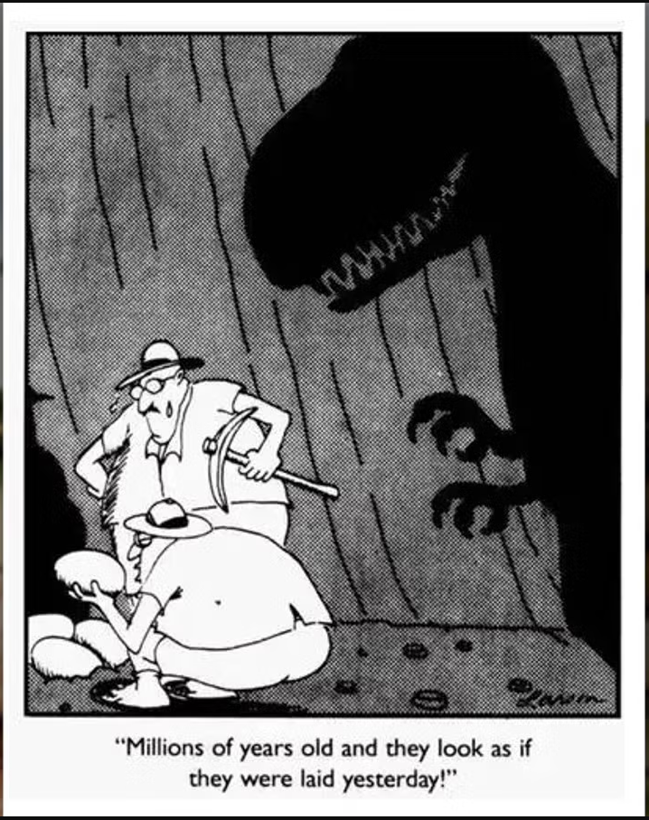

| email - January 2006 |
| by Do-While Jones |
Gary Larson objects to us quoting his opinion.
The trouble with publishing is that when you write (or in this case, draw) something, there is a permanent record of your position. We believe that when one makes a statement about a controversial topic Americans are entitled to discuss it. But virtually everything written is copyrighted, which, some claim, allows protection from criticism.
Everything on our web site is open for criticism. Imagine your reaction if we required all web site visitors to register, and make one of the conditions of registration that you sign a non-disclosure agreement saying you will not tell anyone what you read here because it is copyrighted intellectual property. Then we could sue you if you criticized what we wrote. Of course, we don't do that, but other people have tried a similar tactic.
We first ran into this when we published some fanciful drawings of the fictitious common ancestor of apes and man, Eosimias. This month's Evolution in the News column tells how some groups are trying to protect their evolutionary biology textbooks from criticism by using copyright law to restrict their use in certain public schools. Ironically, at the same time AAAS is trying to use copyright law to protect biology textbooks against criticism, Gary Larson's lawyers have objected to our use of one of his cartoons critical of evolutionists.
We are certain that our use of the cartoon is legal under the "fair use" provision of the copyright act, and protected by the constitutional guarantee of freedom of speech. Although we don't need permission to reproduce the cartoon, we asked for permission as a courtesy. Permission was refused. We also generously offered Mr. Larson the opportunity to clarify his view, but we received no clarification.
The cartoon in question shows two paleontologists who have found some eggs. These eggs are in a nest, above ground, with no evidence of ever having been buried. The nest is in perfect order. The eggs have not been damaged in any way. If they were chicken eggs, there would be no question that they were laid just a few hours ago. If one tried to claim they were decades old, nobody would believe it. The evidence is undeniable. They eggs were laid recently.
One paleontologist remarks to the other one that even though the eggs look like they were laid yesterday, they are actually millions of years old. A shadow in the background shows momma T. Rex with her mouth open, ready to devour the two paleontologists. The eggs were, in fact, laid yesterday.
The cartoon is easily found elsewhere on the Internet, so there is no reason for us not to show it to you.
 |
|---|
Mr. Larson apparently realizes that many paleontologists' prejudices are so strong that they will not acknowledge the clear evidence right under their noses. Even if evolutionists find fresh dinosaur eggs, they will adamantly believe that the eggs are millions of years old. They don't let the evidence destroy their cherished beliefs.
The cartoon was relevant that month because the news contained the indisputable discovery by respected paleontologists of unfossilized dinosaur bones. But rather than admit that dinosaurs did not die out millions of years ago, evolutionists were trying to explain how the bones could be that old, and still not have fossilized or decayed. The real-life scientists were just as blind to the evidence as the fictional scientists in the cartoon. Mr. Larson's observations are so accurate that they certainly must make evolutionists uncomfortable.
Since I'm not a big Far Side fan, I haven't seen many of his cartoons, but someone showed me another of his cartoons attacking evolution. The bottom half of the cartoon is an underwater view, and the top half shows what is above water. The top half shows a baseball on the beach. The bottom half shows a fish holding a baseball bat, looking longingly at the baseball. The caption says fish evolved legs to get their baseballs back.
The cartoon is stupid on so many levels. A fish can't hold a baseball bat with its fins. Even if it could, it couldn't swing a bat hard enough underwater to knock a baseball out of the water. Why would a fish want to play baseball? Even if it did, it could not evolve legs to get on land to get its ball back. Why not wait for high tide to wash the ball back into the water? The stupidity is endless.
Larson's point is that the tales evolutionists tell about how fish evolved legs are equally stupid. Last month we reported a Scientific American article that claimed the fish Acanthostega used its fins to do push-ups so it could stick its mouth out of the water to gulp air, and that over millions of years this strengthened its fins so much that they evolved into legs. Isn't that as stupid as a fish evolving legs by playing baseball?
These are public, on-the-record statements made by Gary Larson which many evolutionists could find highly offensive. If he had strength of conviction, it would be a simple matter for him to give us permission to use these two cartoons. Or, he could retract these two cartoons. But apparently he is afraid to take a stand, just as potential museum sponsors fear connection with the new Darwin exhibit.
We have been very careful in this column not to quote anything in the correspondence from Mr. Larson and his lawyer because we want to make another point.
Mr. Larson sent us a sappy form letter saying he thinks of his cartoons as his children, and he wants his children to come home. The letter from the lawyer had a threatening tone. But just how sappy was Mr. Larson's letter about his cartoon children? How nasty was the letter from his lawyer? You don't know because we didn't quote them. You might wonder if we are exaggerating.
If we just told you that Scientific American had a really stupid article about how the fish Acanthostega used its fins to do push-ups so it could stick its mouth out of the water to gulp air, you might think we were exaggerating. But since we quoted it last month, you know how dumb it really was. That's why we had to quote parts of it.
If we just tell you what people say, without quoting them, you can't be sure that we are representing their positions accurately. That's why we have to quote people.
If America ever gets to the point that one can't quote someone and comment upon it without permission, then all Americans are in serious trouble.
This month's feature article points out that the theory of evolution is being used to advance a political agenda. There are serious political overtones to the use of copyright law to restrict freedom of speech, and federal courts determining what may not be taught in school. This may put some politically conservative evolutionists in a tough position. Which is more important--defending evolution or preserving free speech? Evolutionists may not agree with what creationists say, but American evolutionists should defend to the death the creationists' right to say it.
| Quick links to | |
|---|---|
| Science Against Evolution Home Page |
Back issues of Disclosure (our newsletter) |
| Web Site of the Month |
Topical Index |